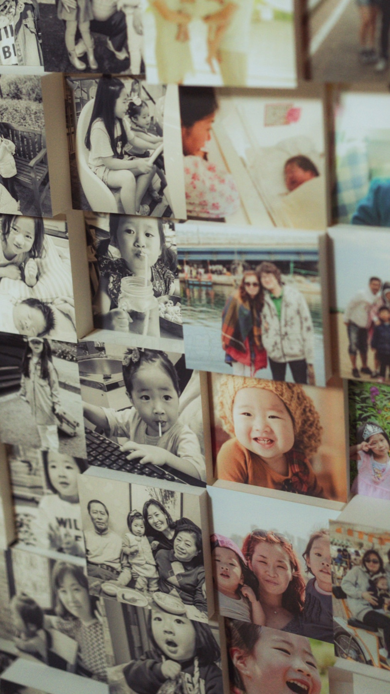
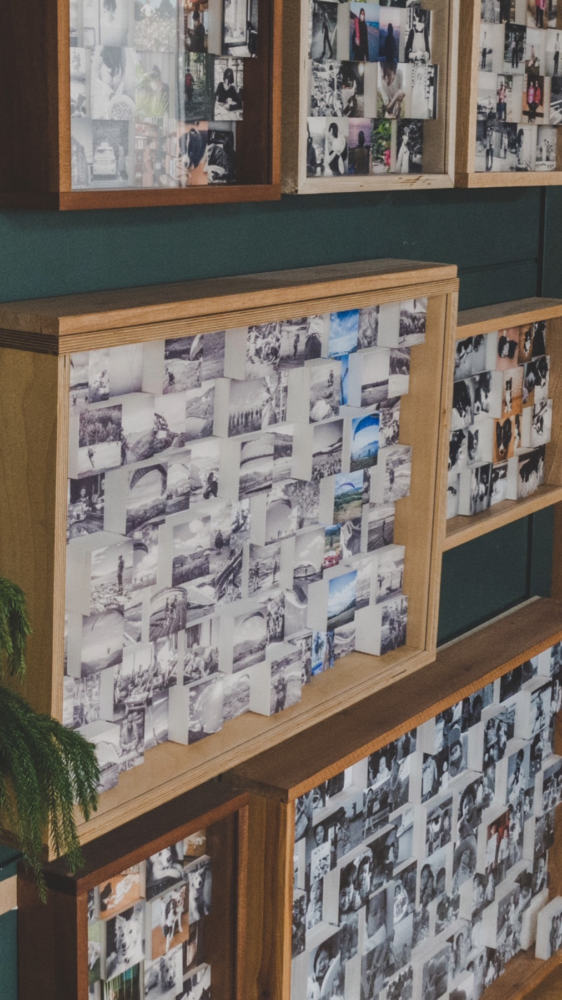
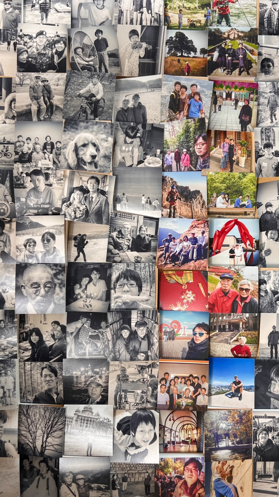
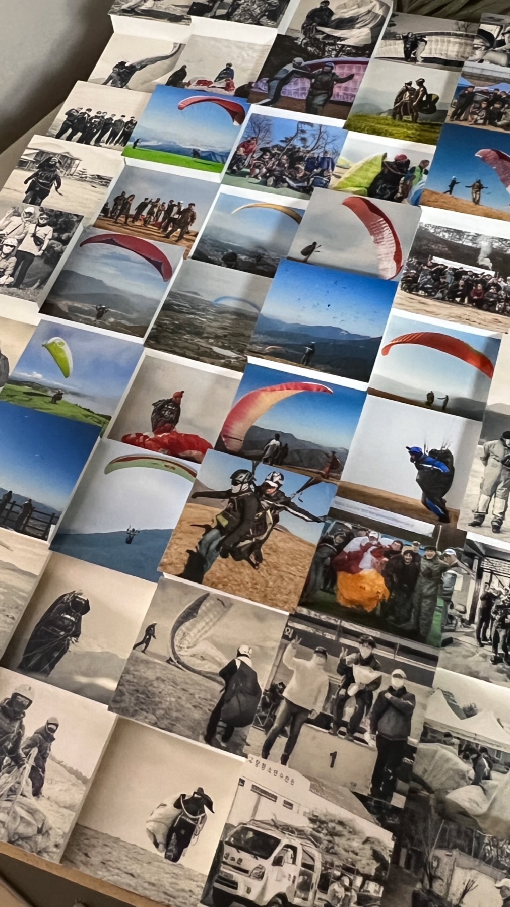
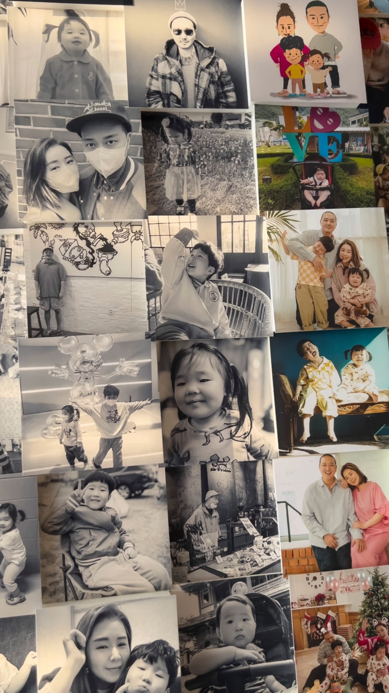
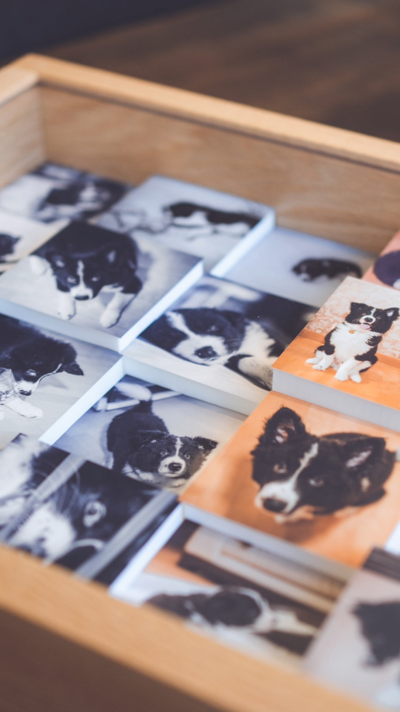
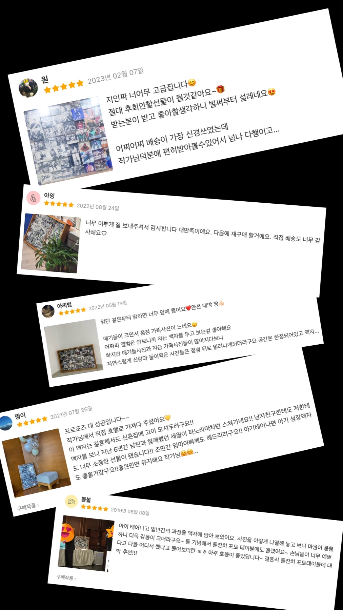

사진 전달
카카오톡 채널로 사진과 원하는 분위기, 선물 목적을 전달합니다.
Bespoke Block Frame Atelier
The Moments는 한 장의 사진보다 오래 머무는 장면을 만듭니다. 추억의 조각을 입체적인 블럭과 원목 프레임에 담아 공간의 품격으로 완성합니다.
서로 다른 높이의 블럭이 빛과 그림자를 만들고, 흑백과 컬러 사진이 교차하며 하나의 벽면 오브제가 됩니다. 집, 스튜디오, 매장, 선물의 순간까지 어울리는 고급 주문형 액자입니다.
Collected Days
아이의 성장, 가족의 여행, 반려동물, 취미와 성취까지. The Moments는 여러 장의 사진을 하나의 흐름으로, 일상의 순간을 매일 보는 작품으로 완성합니다.





Order Flow
카카오톡 채널로 사진과 원하는 분위기, 선물 목적을 전달합니다.
흑백과 컬러의 균형, 중심 장면, 블럭 리듬을 맞춘 구성을 안내합니다.
원목 프레임과 블럭을 조립하고 사진 표면과 단차를 섬세하게 마감합니다.
작품처럼 포장해 선물과 인테리어 오브제로 바로 사용할 수 있게 보냅니다.

Object Detail
가까이서 보면 사진 하나하나가 선명하고, 멀리서 보면 하나의 패턴과 리듬이 오브제가 됩니다. 빛이 닿는 시간마다 다른 표정을 만드는 것이 The Moments 액자의 가장 큰 매력입니다.
Review Archive

“고급스럽고 후회 없는 선물이 될 것 같아요. 배송까지 섬세하게 챙겨주셨어요.”
Gift Review“사진첩에만 있던 순간들이 거실에서 매일 보이는 장면이 됐어요.”
Family Review“그냥 액자가 아니라 오브제 같아요. 손님들이 어디서 했냐고 꼭 물어봅니다.”
Interior ReviewFAQ
아래 질문과 답변 문구는 운영 상황에 맞춰 바로 수정할 수 있도록 구성했습니다. 새로운 질문은 같은 구조의 FAQ 항목을 복사해 추가하면 됩니다.
Start Your Piece
스마트스토어에서 옵션을 확인하거나, 카카오톡으로 사진과 예산을 보내주시면 가장 어울리는 구성부터 제안드립니다.